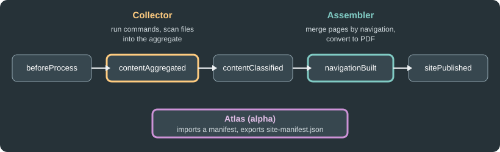

Collector, Atlas and Assembler
|
This content was generated with the assistance of AI and should be verified against the official documentation before being relied on in production. |
This page was written against Antora 3.2.1, @antora/collector-extension 1.0.3, @antora/atlas-extension 1.0.0-alpha.6 and
@antora/pdf-extension 1.0.1 (Assembler 1.0), and checked on 2026-10-26. The three extensions are separate npm packages that
hook into the generator events described in
Antora extensions. They solve different problems: getting generated
content into a build (Collector), referencing pages that live in another build (Atlas), and exporting pages as a
document (Assembler).

The figure places Collector at the content-aggregated event and Assembler at the navigation-built event, with Atlas working on the manifest that is imported and exported around the build.
Collector
What it is and why
Antora reads files from Git branches and tags (or from a worktree), so anything that is not committed is invisible to it:
tables generated from source code, API reference extracted from comments, example files that live next to tests.
Collector fills that gap. It runs external commands in a content source, then imports the files they produced into the
content aggregate as if they had been committed in that content source. It acts during the contentAggregated event, before
the files are classified, so imported files take part in the build like any other file. It can also prepare a worktree for
each content source root when the build needs one, remap files that do not follow the Antora directory layout, replace
or add component versions, and keep generated files for a later extension.
Installing and registering
npm i -D -E @antora/collector-extension@1.0.3Source: Antora Collector Extension
antora:
extensions:
- '@antora/collector-extension'The same registration works from the command line with antora --extension @antora/collector-extension antora-playbook.yml.
To change global defaults, use the map form. create_worktrees accepts auto (the default) or always, and keep_worktrees
accepts true, false or until:<event>:
antora:
extensions:
- require: '@antora/collector-extension'
create_worktrees: always
keep_worktrees: until:contextClosedConfiguring a content source
The configuration lives in the component version descriptor of the content source, under the ext key reserved for
extensions, as ext.collector. The value is a map, an array of maps, or false. When it is missing or false, Collector does
nothing for that content source. A single map is treated as an array with one entry. The keys of an entry are:
| Key | Purpose |
|---|---|
|
Controls the worktree Collector prepares for the content source. Only allowed in the first entry. |
|
Removes a directory before the command runs, for example |
|
Runs an external command: |
|
Imports files into the aggregate: |
Each entry may combine clean, run and scan. Within a step they run in that order (clean, then run, then scan), the steps
of an array run one after another, and worktree is handled before all of them. Paths use / on every platform. The
official documentation shows the following shape:
ext:
collector:
- clean:
dir: build/generated
run:
command: ./gradlew --console rich generateContent
scan:
- dir: build/generated
files: '**/*.adoc'
- scan:
dir: src/test/java/org/example
into: modules/ROOT/examplesThis Gradle example was not executed here because it needs a Gradle project. The Pocket Units example below was.
Worked example: a generated units table
Pocket Units keeps its list of supported units in code. A small Node script writes an AsciiDoc table from that list, and Collector runs the script and imports the result as a page. The script:
const fs = require('node:fs')
const units = [['meter', 'm', 1], ['kilometer', 'km', 1000], ['mile', 'mi', 1609.344]]
let out = '= Generated unit table\n\n|===\n|Unit |Symbol |Meters\n\n'
for (const [n, s, f] of units) out += `|${n}\n|${s}\n|${f}\n\n`
out += '|===\n'
fs.mkdirSync('build/generated', { recursive: true })
fs.writeFileSync('build/generated/units-table.adoc', out)The component version descriptor adds ext.collector below the usual keys:
name: pocket-units
title: Pocket Units
version: '2.0'
nav:
- modules/ROOT/nav.adoc
ext:
collector:
run:
command: node scripts/generate-units-table.js
scan:
dir: build/generated
files: '**/*.adoc'
into: modules/ROOT/pagesThe playbook registers the extension and points at the repository branch (the repository is local here; a remote URL works the same way):
site:
title: Pocket Units Docs
url: http://localhost:5252
start_page: pocket-units::index.adoc
antora:
extensions:
- '@antora/collector-extension'
content:
sources:
- url: ./src/pocket-units
branches: v2.0
ui:
bundle:
url: https://gitlab.com/antora/antora-ui-default/-/jobs/artifacts/HEAD/raw/build/ui-bundle.zip?job=bundle-stable
snapshot: trueRunning npx antora antora-playbook.yml produced the page pocket-units/2.0/units-table.html, although no units-table.adoc is
committed in the repository. The script also left a build/ directory in the content source, which shows build/ as
untracked in git status; add it to the repository .gitignore so the generated files are not committed by accident.
A few practical points follow from the model:
-
Collector only reads the keys from the branch or tag that Antora is aggregating, so the
ext.collectorconfiguration and the script must be committed there. -
The command runs on the machine that builds the site. Make sure the CI image has the tools it needs (Node.js, Gradle, a compiler) and treat the command as code that runs with the build user’s permissions.
-
The
scanstep imports whatever the glob matches. Narrowfilesso unrelated build output does not become pages. -
The configuration can also be set programmatically by another extension that listens to
contentAggregatedand assignsext.collectorto each origin’s descriptor. That extension must be registered before Collector, because both listen to the same event and Collector would otherwise run first. This was not executed here.
Atlas
What it is and its status
The Atlas extension manages references across separate Antora runs by means of a site manifest. Its documented uses are site
composition (sharding the content into several builds) and partial builds. Atlas is not a UI and not a search component, and it
is alpha software: the package version is 1.0.0-alpha.6 (published 2026-09-30), and its page warns that it is likely to
change without notice. Requirements are Node.js 20 or newer and Antora 3.2.0 or newer.
npm i -D -E @antora/atlas-extension@1.0.0-alpha.6Source: Antora Atlas Extension
Register it as '@antora/atlas-extension' under antora.extensions, quoted for YAML as with the other extensions.
The site manifest
On every build Atlas exports site-manifest.json to the site root. It lists the pages and aliases of every component version,
grouped by component and then by version, together with their URLs, and it records site.url when the playbook sets one. No
configuration is needed for the export. The path can be changed with the site-manifest-path attribute, relative to the site
root, but the extension’s page advises leaving it alone at first. A run over the Pocket Units sample produced:
{
"$id": "https://schemas.antora.org/site-manifest/1-0-0/draft-01",
"generated": "2026-10-26T10:57:53.528Z",
"url": "http://localhost:5252",
"components": {
"pocket-units": {
"title": "Pocket Units",
"latest": "2.0",
"versions": {
"2.0": {
"url": "/pocket-units/2.0/index.html",
"pages": [
{
"path": "index.adoc",
"url": "/pocket-units/2.0/index.html",
"title": "Pocket Units 2.0"
},The listing is the beginning of the generated file.
Importing a manifest
Importing is how a build resolves references to pages it does not contain. Two AsciiDoc attributes select the source; they are
set in the playbook under asciidoc.attributes (or in a page header):
-
primary-site-manifest-url: the path or URL of the manifest to import. A URL is downloaded and cached, and a.gzfile is unzipped. -
primary-site-url: the URL of the primary site. Atlas looks forsite-manifest.jsonthere and caches the download.
A forced download happens with runtime.fetch: true or the --fetch option. If the manifest cannot be found, the request is
silently ignored, which is a common reason for references that fail to resolve. The imported files are stubs: they let Antora
resolve a resource ID, and the resulting link points at the published primary site, not at the site being built. The
extension’s page describes two modes, chosen by comparing the primary site URL with the URL of the site being built:
-
Sharded mode, for example a preview of a subset of the content sources. References to resources that are not in the build resolve to the primary site. The sitemap, manifest and redirects of the build contain only the resources it provides.
-
Same-site mode, for partial builds whose output is later overlaid on the full site. References behave as though everything was built, and the sitemap, manifest and redirects are complete. Imported resources reflect the last full build and can differ from current sources.
Setting import.merge: true in the extension’s configuration imports only the files missing from a component version and never
replaces provided files. It is meant for a lightweight home component. Atlas cannot detect files deleted by later full builds.
Worked example: a second site referencing Pocket Units
A second content source, lib, links to the generated units table of the first site with an ordinary resource ID:
= Lib
See xref:pocket-units::units-table.adoc[the units table].Source: Antora Atlas Extension
Built alone, Antora reports target of xref not found: pocket-units::units-table.adoc. With Atlas and the manifest of the first
build:
site:
title: Lib
url: http://localhost:5253
start_page: lib::index.adoc
antora:
extensions:
- '@antora/atlas-extension'
asciidoc:
attributes:
primary-site-manifest-url: ./build/site/site-manifest.json
content:
sources:
- url: ./lib
branches: main
ui:
bundle:
url: https://gitlab.com/antora/antora-ui-default/-/jobs/artifacts/HEAD/raw/build/ui-bundle.zip?job=bundle-stable
snapshot: true
output:
dir: build/site2Source: Antora Atlas Extension
The build had no errors, and the link in the second site resolved to the published first site:
href="http://localhost:5252/pocket-units/2.0/units-table.html"Passing primary-site-manifest-url as an extension option next to require, instead of as an AsciiDoc attribute, did not import
anything in this test.
Assembler and the PDF extension
What they are
Assembler is a library and a family of extensions that merges the AsciiDoc of many pages into one assembly file, following the
navigation hierarchy of a component version, and hands the assembly to a converter. The exporters are separate packages:
@antora/pdf-extension (PDF), @antora/epub-extension and @antora/html-single-extension. @antora/assembler is the core
and is installed with any exporter. Assembler runs at the navigationBuilt event, once the navigation is known, and the exports are
published with the rest of the site as an export family; each page that belongs to an assembly links to its export.
Requirements and installation
-
Node.js 20.20.2 or newer and Antora 3.2.0 or newer.
-
For PDF, Ruby 2.7 or newer (or JRuby 9.2 or newer) and the
asciidoctor-pdfgem. The official installation page recommends a Bundler Gemfile at the project root (add theloggerandbigdecimalgems on Ruby 3.4 or newer, androugefor syntax highlighting) orgem install asciidoctor-pdf.asciidoctorj -b pdfcan be used instead by changing the build command. -
site.urlmust be set in the playbook.
npm i -D -E @antora/pdf-extension@1.0.1Source: Antora Assembler: Install
source 'https://rubygems.org'
gem 'asciidoctor-pdf'Source: Antora Assembler: Install
site:
url: https://docs.example.org
antora:
extensions:
- '@antora/pdf-extension'Source: Antora Assembler: Register
Registration options and the configuration file
Use the map form with require for options: config_file (one configuration file), config_files (a list, for several instances of
the same exporter, each with its own build directory), and enabled: false to register the extension but leave it inactive until
it is turned on from the command line. Without config_file, Assembler looks next to the playbook for
antora-assembler-pdf.yml and then antora-assembler.yml. The file is optional; a missing file named in config_file produces a
warning and default settings. The only top-level key the official configuration page documents is enabled (default true), which
turns that instance off.
antora:
extensions:
- require: '@antora/pdf-extension'
config_file: ./antora-assembler-pdf.ymlSource: Antora Assembler: Register
The other sections of the file (filter, assembly, profiles, AsciiDoc and build) have their own pages in the official docs, which
this page does not reproduce. Reading the source of the installed @antora/assembler 1.0.1 shows that the assembly keys it
recognises include attributes, doctype, insert_start_page, root_level, root_page_style, section_merge_strategy and
xml_ids (snake case or kebab case in YAML), that a component version can define profiles under ext.assembler in its descriptor,
and that the build section accepts command, cwd, dir, clean and publish. Without a configured command the PDF
extension runs asciidoctor-pdf --sourcemap, prefixed with bundle exec when a Gemfile.lock is found next to the playbook.
Check the official pages for the meaning of each before relying on them.
Running it
With the extension registered, a normal npx antora antora-playbook.yml produces the PDF files next to the HTML pages. The extension can
also be registered for one run only:
npx antora --extension @antora/pdf-extension antora-playbook.ymlSource: Antora Assembler: Register
The extension installed correctly in a scratch project, but no PDF was generated: Ruby is available here, though the
asciidoctor-pdf gem was not installed, so this example was not executed.
Pitfalls
-
The manifest URL is an AsciiDoc attribute, not an extension option, in the tested Atlas release.
-
Atlas is alpha: pin the exact version and expect changes.
-
Commands run by Collector and by Assembler’s build are executed on the build machine.
-
Set
site.urlin the playbook, as the official registration page shows for Assembler.